Manage Circulation¶
Invenio features a circulation module which allow the library to manage their physical items, manage patron loans- and borrower information, and keep track of interlibrary loans- and new purchases. The module can handle multiple internal and external libraries.
Librarians who have access will find it in the administration menu.

Note
Circulation statistics are found in a the statistic module of Invenio.
1. Managing items¶
The items is the core of the circulation module. An item is attached to a bibliographic record and may contain multiple physical copies. The bibliographic data on top left side is extracted from the bibliographic metadata, while additional information, such as barcode, location, document type, and which library it belongs to, is added to each single copy.
The item site gives an overview over current and historical hold requests, loans and purchases, allow for updating and adding new copies, as well as creating loans and hold requests for specific copies.

1.1 Add new copies¶
The “Add new copy” button opens a form to fill out information for your new copy. The barcode field is mandatory while the open text fields are optional. All internal libraries will be displayed in the library list, while all document types are shown in the collection menu. The document type list and status alternatives are configurable.

1.2 Edit bibliographic record¶
The “Edit this record” button send the administrator directly to the cataloging module of Invenio. Documentation about the editor is found here, while a sneak peek is given below. One function to notice is the link directly back to the item in circulation.

1.3 Copy specific actions¶
The select list under the action column allow the administrator to conduct different tasks related to the specific copy.

- Update: Opens a form similar to the one presented in section one. Allows the administrator to update information about the copy.
- Add similar copy: Adds a new copy to the items. Differentiated from the “Add copy” button by pre-fill all fields without barcode.
- New request: Allow the administrator to create a request with the copy as the first step in the workflow. See section five for a complete guide of how to register new requests.
- New loan: Allow the administrator to create a loan with the copy as the first step in the workflow. See section three for a complete guide of how to register new loans.
- Delete copy: Deletes the copy. The administrator has to confirm before the copy is deleted.
1.4 Current status & historical overviews¶
The “current status” and “historical overview” list gives an overview over current and historical hold requests, loans and purchase requests.

Selecting more details will give detailed information in addition to perform the following tasks:
- Hold request: Create loan from todays date or cancel the hold request.
- Loans: Renew, return, change due date or send recall messages.
- Purchases: Put the book on order as the first step of the the acquisition workflow. This feature patron driven acquisition and requires that the bibliographic metadata is already available for the user.
Note
The administrator can also get access to the hold requests and loans though the different loan lists.
1.6. Find items¶
The administrator can access an item through three different paths, by:
- searching directly in the circulation management module
- browsing the items in the loan lists
- searching in the OPAC
Searching in circulation¶
By selecting “Items” in the left side menu, the administrator is sent to the search interface as shown below. The administrator can search on record ID, barcode and items details. Item details queries the bibliographic metadata.
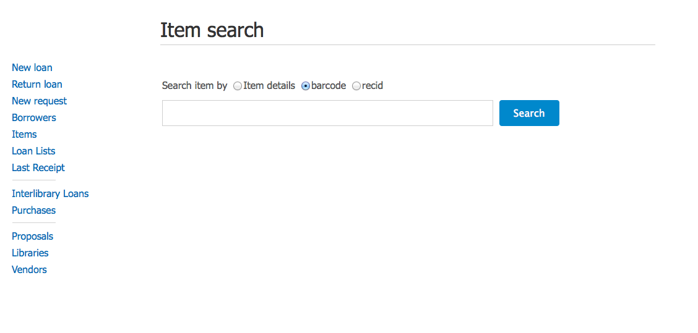
The results are displayed in a single list and the titles link to the item details page.

Browsing the loan lists¶
The administrator can browse through the items in the respective lists. All the titles link to the item details page.

Searching in the OPAC¶
To make items more accessible, administrators who is logged in will find a link “View library record” in the search result for every record. The link redirects directly to the items details page.

2. Manage borrowers¶
2.1. Find existing borrower¶
The administrator can find borrowers by selecting “Borrowers” in the left hand menu and search on either borrower ID, name or email.

A list will be displayed if multiple borrowers are found in the database. If only one borrower is found, the administrator will be sent directly to Borrower details page.

The borrower detail page allow the administrator to create new loan, register new loan- and ILL requests, send notifications and update personal information. The borrower details page gives in addition an overview over current and historical requests, loans, ILL and proposals in a similar manner as described in section 1.4.
See section three and section five for a complete guide of how to register new loans and new requests.
2.2. Register new borrower¶
The circulation module has a borrower database which is separated from the regular Invenio user database. The borrower database store more detailed information about the patron.
Traditionally, new borrowers have been registered from the borrower search site.

Now, it is possible to create borrower account while register a regular Invenio account trough WebAccess. The borrower account is only created if a name is registered.

Note
A borrower in the circulation database is registered when a user is created though WebAccess. A WebAccess account is not created when a borrower is registered though the circulation module.
3. Create loan¶
There are multiple entry points for creating a new loan.
3.1. “New loan” - The easiest procedure!¶
If you have the book on your desk, this is your workflow! Simply search for the user and enter the barcode. The loan is created. Enter multiple barcodes to create multiple loans for the same user.
Step 1

Step 2 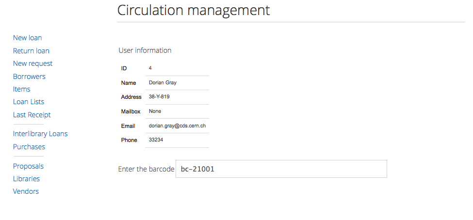
Step 3

3.2. Create a new loan with the item as the entry point¶
If no barcode is not known, the administrator can create a loan from the item details page.
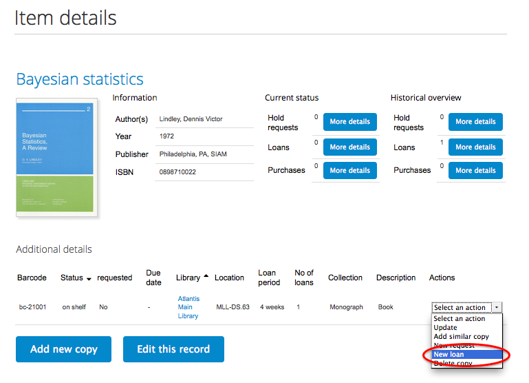
After selecting “New loan” from the action list, the administrator is asked to search and select the borrower. Afterwards, the loan is automatically created.
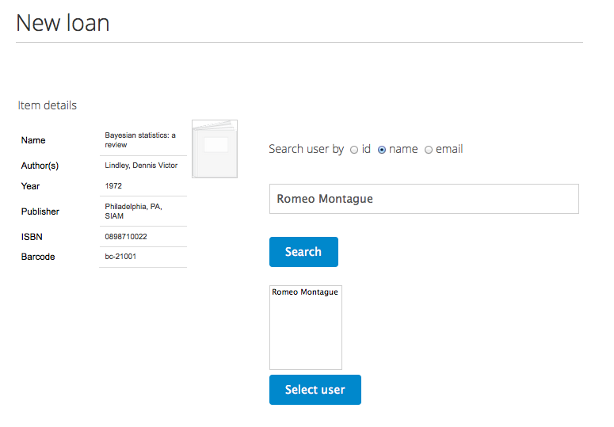
3.3. Create a new loan with the borrower as the entry point¶
The administrator can choose to create a new loan from the borrower details page. See section two for more information about the borrower detail page. After selecting “New loan”, the administrator are asked to enter the barcode as in section 3.1
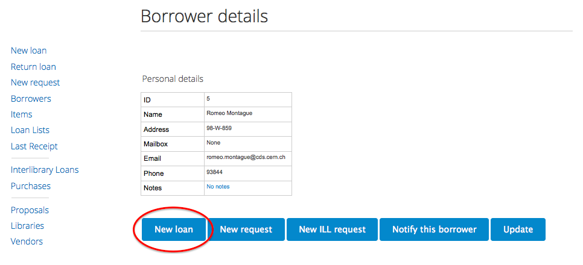
3.4. Create a new loan from the request lists¶
The circulation module have three lists for requested items. They are found under loan lists in the left hand menu.
- Overdue loans with hold
- Items on shelf with hold
- Items on loan with hold
Only the “items on shelf with hold list” allow the administrator to create a new loan.

From the items on shelf with holds list, the administrator can select to create loan or delete the request.
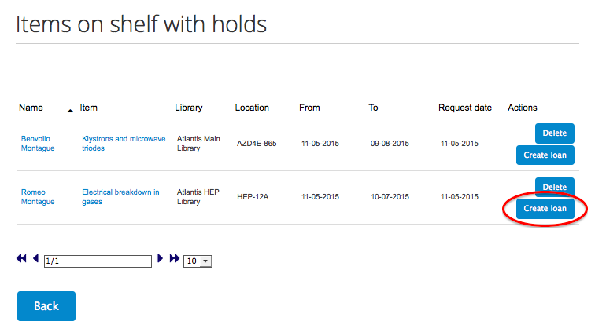
By selecting “Create loan”, the administrator is asked to enter the barcode before the loan is created.
4. Return loan¶
In a simliar way as creating a loan, returning a loan can be conducted though different workflows.
4.1. “Return loan” - The easiest procedure!¶
The loan can be returned by selecting “Return loan” in the circulation menu. The return is registered with once the barcode is entered.

A new return can be registered by entering a new barcode.
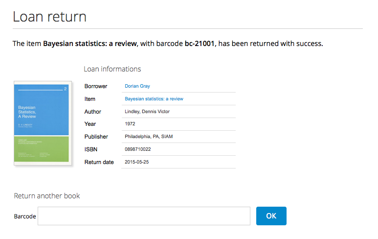
4.2. Return loan with the item as the entry point¶
Selecting “More details” for current loans opens a new page with loan details.

The copy is atomically returned by selecting “Return” from the loan options column.

4.3. Return loan with the borrower as the entry point¶
The administrator have access to the the loan details list from the borrower interface.

The copy is atomically returned by selecting “Return” from the loan options column.

5. Create request¶
New loan requests can be registered by the administrator or by the patron. The administrator can use two different methods: the built in workflow starting from “New request” in the left hand menu, or from the item details page. The patron will receive an email notification when a request is created.
5.1. By the administrator¶
“New request”¶
Step 1: The administrator first search for the borrower.

Step 2: Search and select the correct item.

Step 3: As an item may have multiple copies, the administrator is asked to select the desired copy.

Step 4: As a final step, the administrator is asked to enter the period of interest.

Item details page¶
From the item details page, the administrator can create request for the specific copy. Please have a look at section 1.6 for how to find an item.
Step 1: Select “New request” in the action list for the desired copy.

Step 2: Search for the borrower who has requested the loan.

Step 3: Enter the desired period of interest and click “Continue”. The loan request is now created.

5.2. By the patron¶
The patron can register new loan requests from the detailed view under the “Holdings” tab.

Click “Request” for the desired copy.

Enter the desired period of interest and click “Continue”. The loan request is now created.
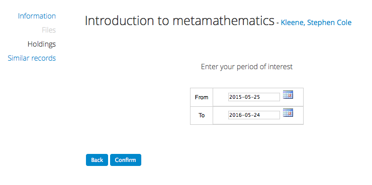
The patron has also a link to the holding tab from the search record.

6. Manage interlibrary loans¶
The circulation module includes a ILL workflow, which allow libraries to register request and keep track of the interlibrary loans. The following section goes though all the steps in the workflow.

6.1. Register new loan request¶
The administrator is first asked to check if the item exists in the library system to avoid requesting an ILL for items that the library has.

If the item is not found, the administrator is sent directly to the request form.
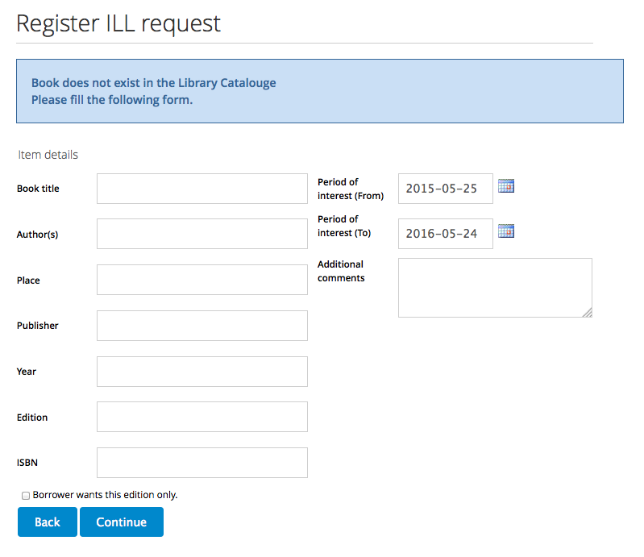
First fill in the bibliographic data and then search and select the patron. The request is created upon confirmation.
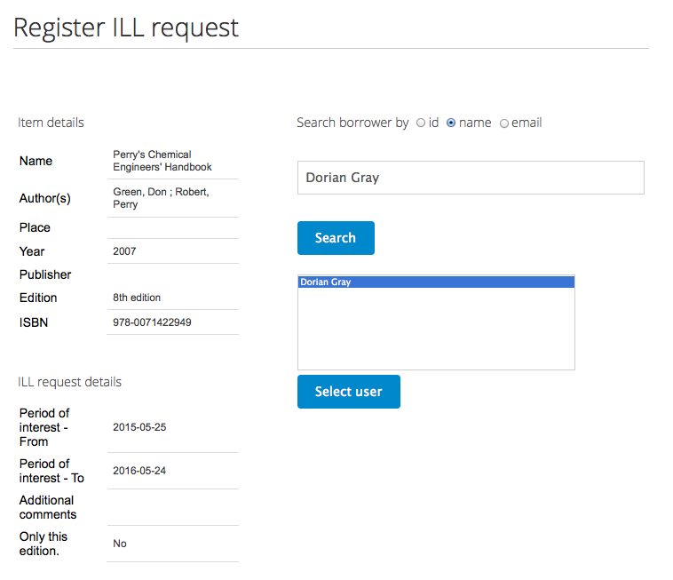
Note
Two different forms exists: one for books and one for articles. The different forms contain different textfields, while the workflow remains the same.
6.2. Request loan from external library¶
New loan requests are found in “ILL list: New”

Selecting the specific item sends the administrator to the ILL form where the status can be updated.
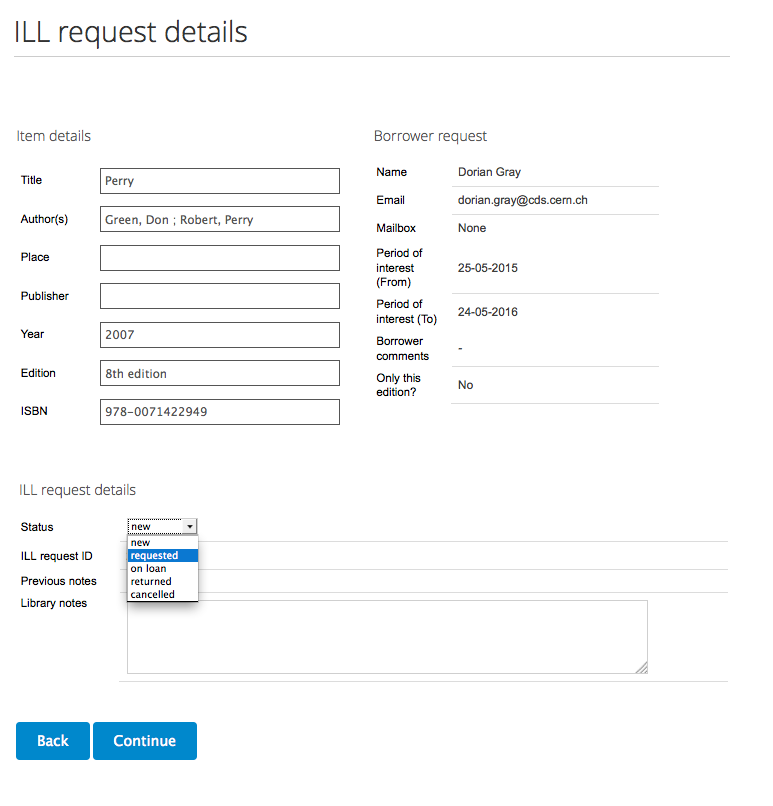
When the status is changed from “new” to “requested”, the form changes to accomodate for additional information. The item is moved to the list “ILL list: Requested” when selecting “Continue”.

Note
The list of libraries/ suppliers is generated from the list of external libraries added under the “Libraries” tab in the circulation menu.
6.3. Receive book and create loan¶
When the library has received the book and is ready to create a loan, the item should be moved from the “ILL list: Requested” to “ILL list: On loan”. This is done by changing the status from “requested” to “on loan”. Once more, the form changes to accomodate necessary information.
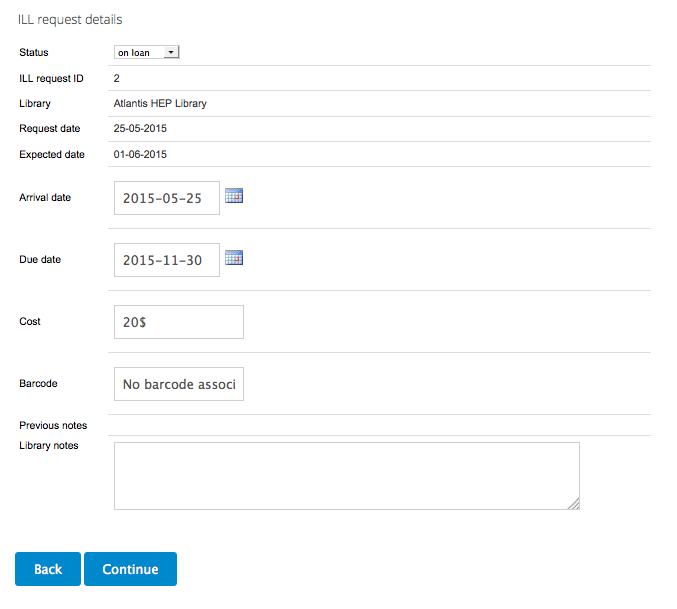
The loan is created when selecting “Continue”. The administrator is asked to notify the patron by email. The administrator can ignore this message if he/ she does not want to send an email. The loan is already registered.

6.4. Return loan¶
Due date was set when the loan was created and the user will receive notification letters if the book is not returned prior to the due date. The administrator can also send recall messages manually by selecting “Send recall” from the “ILL list: On loan”.

When the patron has delivered the book and the library is ready to return it, change the status from “on loan” to “returned”. Once more, the form changes to accomodate necessary information.

6.5. ILL history¶
The administrators can also search on previous loans by selecting “Search: ILL history”.
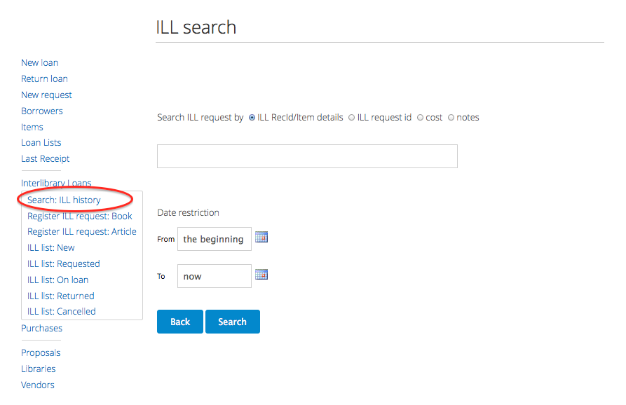
7. Patron over view¶
The patron will find an overview over his/ her loans and loan requests under “Your loans” in the “Personalize” menu.
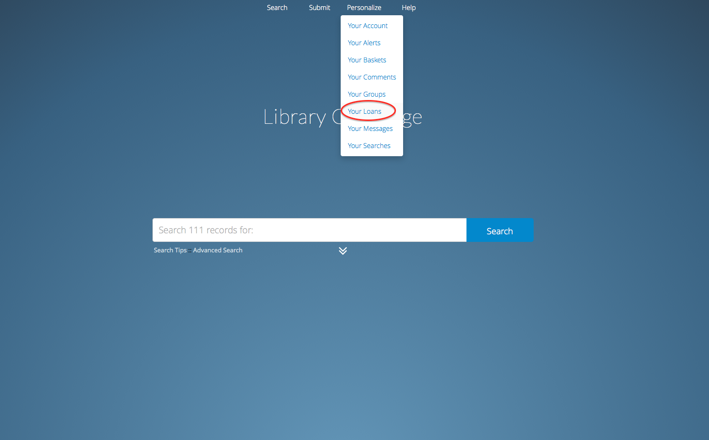
The patron can choose to renew loans, cancel requests, in addition to see historical overviews.